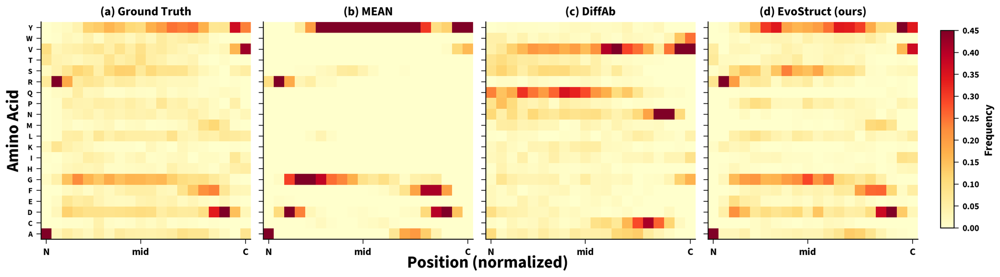
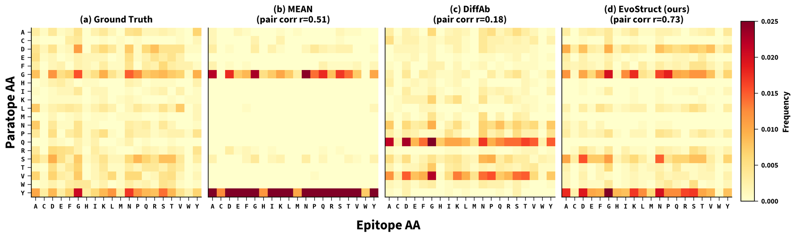
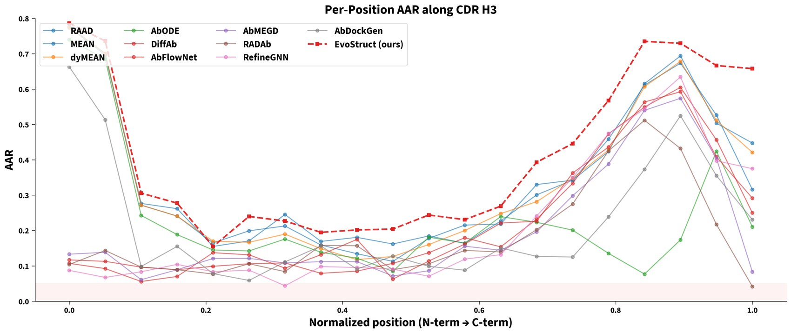

EvoStruct
Bridging Evolutionary and Structural Priors for Antibody CDR Design via Protein Language Model Adaptation
TL;DRGraph networks designing antibody loops learn their amino acid distribution from a few thousand complexes, and under greedy decoding they collapse onto tyrosine and glycine. A protein language model has already learned that distribution from hundreds of millions of sequences. EvoStruct keeps the sequence head inside ESM-2's representation space and feeds structure in through a cross-attention adapter, which raises sequence recovery by 16% and vocabulary diversity by 2.3 times over the best graph baselines at the same time.
Abstract
Equivariant graph neural network (GNN) methods for antibody complementarity-determining region (CDR) design achieve the highest sequence recovery but suffer from severe vocabulary collapse. The current best GNN methods over-predict very few amino acids, such as tyrosine and glycine, while ignoring functionally important residues. We trace this failure to GNN encoders learning amino acid distributions de novo from limited structural data, discarding substitution patterns encoded in evolutionary databases. To resolve this, we propose EvoStruct, which bridges a frozen protein language model (PLM) with 3D structural context from an E(3)-equivariant GNN via a cross-attention adapter. Unlike prior PLM-structure adapters for general protein design, EvoStruct targets the vocabulary collapse problem specific to CDR design through progressive PLM unfreezing and R-Drop consistency regularization. On the ChiMERa-Bench benchmark, EvoStruct achieves the highest amino acid recovery and lowest perplexity among several antibody design methods, improving sequence recovery by 16% and reducing perplexity by 43% relative to the best GNN baselines, while recovering 2.3 times greater amino acid diversity and the highest binding-pair correlation with ground truth.
Three linked failures of structure-only design
Evaluating CDR-H3 design on ChiMERa-Bench turns up three symptoms that keep appearing together, and all three point at the same cause.
Vocabulary collapse
Native loops use the alphabet broadly, with an effective vocabulary near 15.5. Graph networks with greedy decoding fall to 3.0 to 5.5, overpredicting tyrosine by 34% and glycine by 21% while tryptophan, cysteine and methionine almost disappear.
Binding pairs are not learned
No baseline correlates better than $r = 0.69$ with the native paratope-epitope amino acid pairing, and one diffusion model is anti-correlated at $-0.29$, so antigen information is barely reaching the sequence head.
Contact positions are the weakest
Every method recovers 8 to 23% at the positions that touch the antigen against 23 to 51% elsewhere, which is the opposite of what antigen conditioning should produce.
The common root is where the amino acid distribution is learned. A graph encoder has to discover substitution patterns from about 3,000 complexes, so it converges on the few residues that are most frequent at each position. A protein language model has already learned those patterns from hundreds of millions of sequences, and its output distribution assigns sensible probability to all twenty amino acids.
Two paths, joined by an adapter
The structural path is a relation-aware E(3)-equivariant graph network over the whole complex, with eight edge types, which returns per-residue embeddings and updated backbone coordinates. The evolutionary path is ESM-2 with 650M parameters, reading the heavy chain with the loop masked,
Rather than giving the adapter the whole antigen, the nearest $K_\text{ag} = 128$ antigen residues are cropped as context, since a contact is necessarily close. The adapter is one cross-attention block and a feed-forward network, and the asymmetry of its projections carries the design principle,
The queries come from the language model, which asks what structural environment each position sits in, and the keys and values come from the graph network, which answers. The refined representations are projected back to ESM-2's dimension, so the sequence head never leaves the space whose vocabulary we want to keep.
Progressive unfreezing
Three phases: the adapter, GNN and head train with ESM-2 frozen, then the top four transformer layers open, then everything fine-tunes at a low rate. The schedule keeps the evolutionary prior from being overwritten early.
R-Drop consistency
Two forward passes per step under different dropout masks, with a penalty on the difference between their sequence losses, which pushes the model toward predictions that do not depend on which units were dropped.
Cost
14.4M trainable parameters in the first phase, rising to 93.1M once the top ESM-2 layers open, and about 7 hours end to end on one H100.
Highest recovery, lowest perplexity
| CDR-H3 | AAR↑ | CAAR↑ | PPL↓ | RMSD↓ | fnat↑ | DockQ↑ | EpiF1↑ |
|---|---|---|---|---|---|---|---|
| EvoStruct | 0.43 | 0.22 | 1.88 | 1.84 | 0.61 | 0.70 | 0.73 |
| RAAD | 0.37 | 0.21 | 3.27 | 1.75 | 0.56 | 0.70 | 0.72 |
| MEAN | 0.37 | 0.24 | 3.10 | 1.84 | 0.57 | 0.69 | 0.72 |
| dyMEAN | 0.37 | 0.22 | 3.29 | 2.22 | 0.53 | 0.65 | 0.64 |
| DiffAb | 0.23 | 0.14 | – | 2.49 | 0.59 | 0.65 | 0.64 |
| AbFlowNet | 0.23 | 0.14 | – | 2.38 | 0.60 | 0.66 | 0.65 |
| AbMEGD | 0.21 | 0.12 | – | 2.44 | 0.56 | 0.64 | 0.64 |
| dyAb | 0.19 | 0.09 | – | 2.34 | 0.14 | 0.45 | 0.24 |
| RefineGNN | 0.21 | 0.10 | 8.46 | 2.86 | 0.65 | 0.73 | 0.76 |
| AbDockGen | 0.24 | 0.12 | 8.04 | 4.67 | 0.41 | 0.55 | 0.62 |
Means over the test complexes, with the standard deviations in the paper. Best in bold, second best underlined. AbODE and RADAb are in the paper's table and are left out here because their backbone failures put them far outside the range of the others.
Structurally EvoStruct lands with the graph networks rather than ahead of them, at 1.84 Å against RAAD's 1.75 Å, and its interface numbers sit in the same band. The honest reading is that the gain is on the sequence axis. RefineGNN, which never sees the antigen at all, still takes the best fnat and DockQ, which is the same uncomfortable result the benchmark reported and a reminder of how little antigen conditioning currently buys at the interface.
What happens to the three failures
The vocabulary comes back
EvoStruct reaches an effective vocabulary of 12.4, which is 80% of the native diversity, against 4.7 to 5.3 for the best graph baselines. It produces 282 distinct bigrams and 1,214 distinct trigrams, against 364 and 1,818 in the deposited loops and 52 and 110 for RAAD, and it covers all twenty of the most frequent native motifs.

Binding pairs are learned
Interface enrichment correlates with the deposited structures at $r = 0.81$ against 0.68 for the next best, and the paratope-epitope pair correlation reaches $r = 0.73$ against 0.69. The structural adapter is therefore routing antigen information to the sequence head, which is exactly what the cross-attention was introduced to do.

Contact positions improve, and stay the hardest
Recovery rises at contact positions, from 20.6% to 22.6%, and further at non-contact positions, from 43.5% to 51.0%. The larger gain is at the positions the antigen does not constrain, which is where the evolutionary prior is strongest, and along the loop EvoStruct leads at the anchors, 71.2% against 60.7%, and at the hypervariable apex, 22.4% against 19.0%.

What the designs look like
Everything in this section is read from the per-complex outputs that the evaluation harness stored for the epitope-group test split. Nothing here is redrawn by hand.
One loop, placed against its epitope
PDB 7X7T, a CDR-H3 of 14 residues on a 187-residue antigen. The left picture is the whole complex with the epitope painted on the antigen surface, and the dashed window is what the right picture magnifies. Each loop is drawn from the coordinates the method produced, in the frame of the deposited complex.
Distances are the alpha-carbon RMSD of each designed loop against the deposited one, and the reach counts the epitope residues a loop comes within 8 Å of, the cutoff the interface metrics use. DiffAb is left out of this picture because the harness stored its coordinates in a different frame, which a check in the extraction script catches.
Designed sequences, against the deposited ones
Matched positions are shaded, and the amber underline marks the positions that touch the antigen in the deposited structure. The spread of residues EvoStruct reaches for is visible directly: where the graph baselines repeat glycine and tyrosine, EvoStruct varies.
Which amino acids the designs reach for
Counted over all 292 designed loops of the split, from the stored predictions. The deposited loops spread their mass across the alphabet. RAAD and MEAN concentrate a third of it on glycine and another quarter on tyrosine, while EvoStruct keeps more of the alphabet in play, which is the collapse the paper set out to break.
Frequency of each amino acid across the designed CDR-H3 loops of the epitope-group test split. These counts are measured here from the stored predictions, so they are not the effective-vocabulary figures quoted above, which the paper computes with its own definition.
BibTeX
@inproceedings{ahmed2026evostruct,
title = {{EvoStruct}: Bridging Evolutionary and Structural Priors for Antibody {CDR} Design via Protein Language Model Adaptation},
author = {Ahmed, Mansoor and Lee, Sujin and Khayaz, Umar and Patterson, Murray},
booktitle = {ICML 2026 Workshop on Generative and Agentic AI for Biology},
year = {2026},
url = {https://openreview.net/forum?id=7bAEJ3UMPi}
}